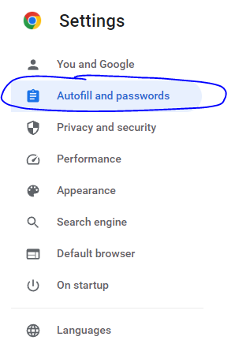

Migration Mail Orange vers une autre boite mail
Etape 1 transferer ses futurs emails vers la nouvelle boite email
Avant de commencer à gérer les mails existants, nous allons commencer par traiter le transfert des emails vers un nouvelle boite mails automatiquement. Pour faire ces étapes vous devez être brancher en câble ou en Wifi sur la box internet Orange de saint Denis sur Loire. Ailleur ça ne fonctionnera pas (sécurité Orange)
Une fois connecté sur l'internet de Saint denis :
- Se rendre sur orange/Wanadoo email
- cliquer sur le petit onglet paramètre à droite de la page, puis ensuite sur tous les paramètres
- Dans le menu à gauche, selectionnez "Généralités" puis chercher le bouton modifier du sous menu "transferts de mail"
- Ajouter votre nouvelle addresse email, puis valider.
- C'est terminé.
Etape 2 gestion des emails existants
Cela peut être compliqué de tout transférer sur votre nouvelle boite email, je suggère un travail de tri avant de commencer à migrer vos emails existants. je cherche une solution.
Etapes optionelles
A - Message d'absence automatique
Pour permettre au différente personne de savoir que votre email à changer vous pouver activer un message automatique. Si vous souhaitez profiter de la fermeture de l'email orange pour repartir vers une adresse email propre et sans pub je vous déconseille de faire les étapes en dessous. Cela va donner à toutes les personnes qui vous envoi des emails un moyen de vous contacter sur votre nouvelle adresse. Plutôt, je vous conseillerais d'attendre de recevoir un email transféré automatiquement (étape 1) dans votre nouvelle boite pour y répondre avec votre nouvelle adresse. Cela fera comprendre à votre destinataire que vous avez changé d'email sans devoir le dire à tout le monde. Si dans le cas contraire, vous souhaitez informez tout le monde, suivre les étapes suivantes:
- cliquer sur le petit onglet paramètre à droite de la page, puis ensuite sur tous les paramètres
- Dans le menu à gauche, selectionnez "Généralités" puis chercher le bouton créer un message du sous menu "message d'absence"
- entrez votre message.
- Exemple: Bonjour, mon email à changer et vous pouvez me contacter à XZY@gmail.com
B -hanger vos comptes liés à votre adresse wanadoo/orange.fr
Il est fort probable que votre adresse email orange.fr ou wanadoo.fr sert à vous connecter sur différents sites ou à des comptes en ligne (banque, amazon, facebook, etc...). Il faut modifier votre email pour ne pas vous retrouver coincer. Cette étape est assez complexe car il n'y a pas de séquence particlière qui mènera tout le monde au même résultat. Comprendre -> Nous avons tous des comptes créés sur des sites et des logiciels différents, à chacun son travail personnel pour en venir à bout.
Néanmoins, supprimer une adresse email c'est une occasion en 'or' de faire disparaitre nos traces d'internet (surtout si c'est fait pas le fournisseur d'accès! ). Alors profitez de l'occasion pour ne modifier QUE ce que vous souhaitez garder. Le fait que Orange supprime l'adresse email ne supprimera pas votre compte sur un site web mais ils n'auront plus aucun moyen de vous joindre et votre compte sera fermé pour inactivité d'ici quelques temps sans le moindre effort.
B1 - Quelques méthodes pour identifier les comptes qui utilise votre adresse email wanadoo ou orange:
B11 - Methode de la barre de recherche
Dans la barre de recherche orange, essayez les mots suivants qui sont souvent utilisés dans une souscription à un compte:
- confirmation, bienvenue, souscription, désinscrire, signing, vérifier, verify, Welcome
- Une fois la recherche effectué, faite le tri entre les comptes que vous souhaitez garder et laissez tombé les autres.
B12 - Méthode du navigateur internet
Il est possible que vous ayez enregistré dans votre navigateur votre login et mot de pass pour un site web.
- rendez vous sur votre navigateur (je prends l'exemple de google chrome) dans les parametres
- trois petits point en haut à droite de l'ecran puis paramètre

- puis cliquez sur autocompletion et mots de passe (peut pas la bonne traduction...) 
- puis Google password Manager
- vous y trouverez la liste de tous les sites et comptes qui sont enregistrés votre navigateur, identifier les comptes qui utilisent votre email wanadoo/orange puis faite le changement si nécéssaire.